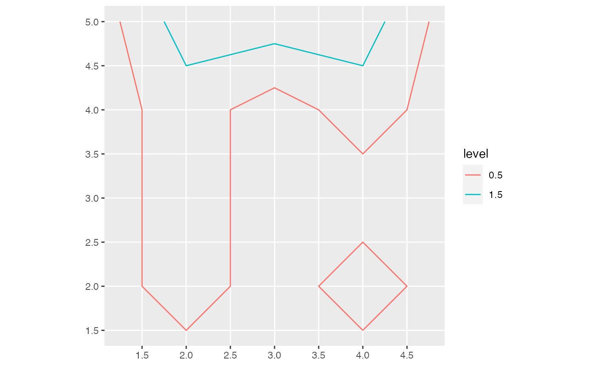
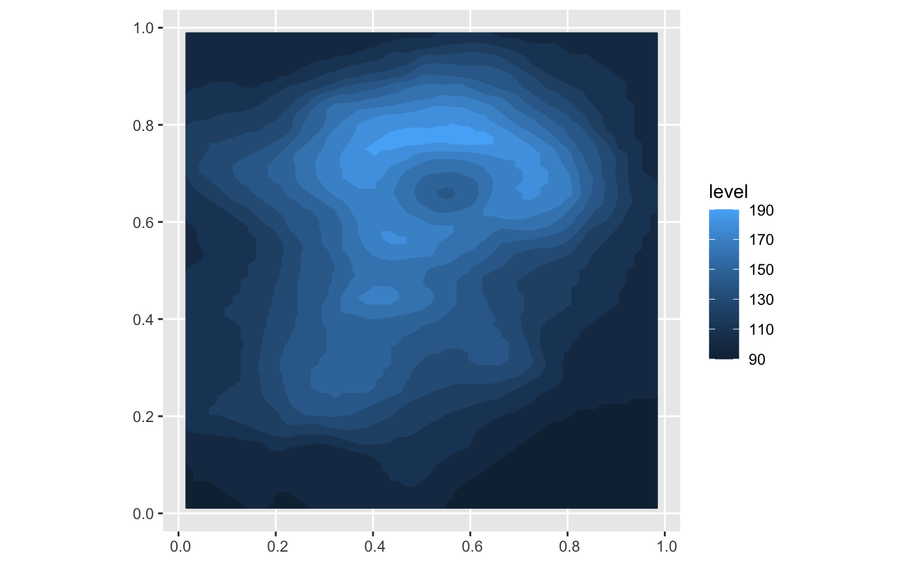
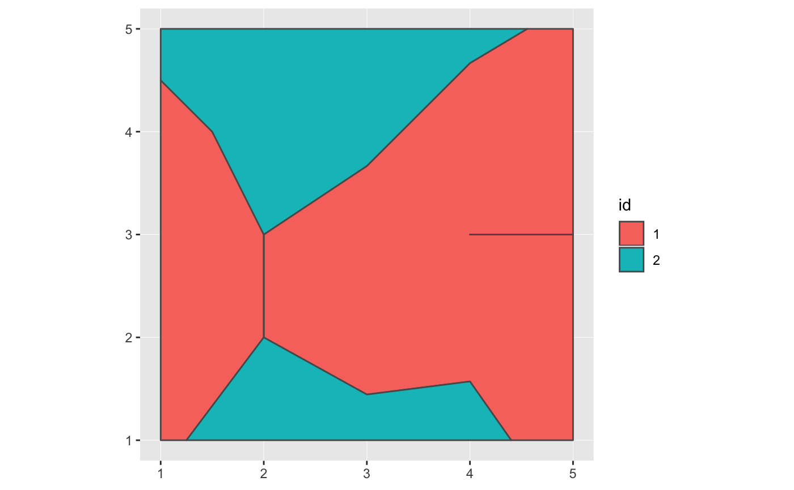
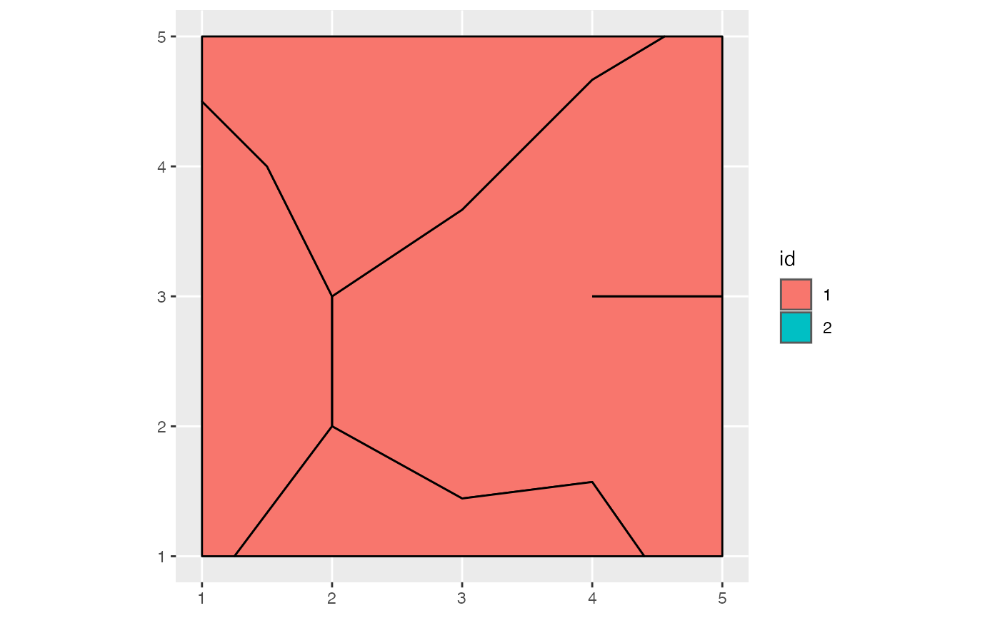

Convert isolines or isobands to an sf geometry collection (sfg) object. Further downstream
processing needs to happen via the sf package.
iso_to_sfg(x)
| x | The object to convert. |
|---|
The function iso_to_sfg() is a generic that takes an object created by either isolines()
or isobands() and turns it into a simple features (sf) geometry collection. Importantly,
the isobanding algorithm can produce polygons that do not represent valid simple features. This
happens usually when the lower limit of an isoband is exactly equal to some data values (see
examples for a demonstration). This can be worked around either by slightly shifting the data
or band limits (e.g., round all data values and then shift them by a value smaller than the
rounding error) or by fixing the geometries using the function st_make_valid().
#>library(ggplot2) # Example 1: simple 5x5 matrix m <- matrix(c(0, 2, 2, 2, 0, 0, 1, 0, 1, 0, 0, 1, 0, 0, 0, 0, 1, 0, 1, 0, 0, 0, 0, 0, 0), 5, 5, byrow = TRUE) z <- isolines(1:ncol(m), nrow(m):1, m, c(0.5, 1.5)) lines <- iso_to_sfg(z) x <- st_sf(level = names(lines), geometry = st_sfc(lines)) ggplot(x) + geom_sf(aes(color = level))# Example 2: volcano dataset m <- volcano b <- isobands((1:ncol(m))/(ncol(m)+1), (nrow(m):1)/(nrow(m)+1), m, 10*9:19, 10*10:20) bands <- iso_to_sfg(b) x <- st_sf(level = as.numeric(sub(":.*", "", names(bands))), geometry = st_sfc(bands)) ggplot(x) + geom_sf(aes(color = level, fill = level))# Example 3: invalid simple features m <- matrix(c(1.5, 1.5, 1.5, 1.5, 0.6, 0.5, 1.5, 1.5, 0, 0, 0, 1, 0, 1, 1, 0, 1, 0, 0.7, 0, 0.9, 1.3, 1.8, 1.4, 0.4), 5, 5, byrow = TRUE) raw <- isobands(1:5, 5:1, m, levels_low = 0:1, levels_high = 1:2) bands <- iso_to_sfg(raw) iso <- st_sf( id = factor(1:length(bands)), geometry = st_sfc(bands) ) # the geometries are not valid st_is_valid(iso, reason = TRUE)#> [1] "Self-intersection[2 2]" #> [2] "Too few points in geometry component[4 3]"#> [1] "Valid Geometry" "Valid Geometry"# alternatively, if we shift all data values by a tiny # amount (here, 1e-10) so they don't coincide with the band # limits, no invalid geometries are generated. raw <- isobands(1:5, 5:1, m + 1e-10, levels_low = 0:1, levels_high = 1:2) bands <- iso_to_sfg(raw) iso <- st_sf(id = factor(1:length(bands)), geometry = st_sfc(bands)) st_is_valid(iso, reason = TRUE)#> [1] "Valid Geometry" "Valid Geometry"